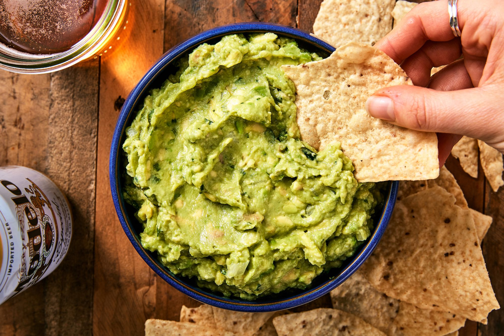

Guacamole

Description
This recipe will show you a simple and easy way to make a delicious bowl of guacamole!
Guacamole is a traditional Mexican condiment made of fresh ingredients. It can be enjoyed as a topping on tacos or tostadas, and it also makes a delicious dip to be enjoyed with tortilla chips.
Ingredients
- 3 Avocados
- 1 lime, juiced
- 1 teaspoon salt
- 1/2 cup diced onion
- 3 tablespoons chopped fresh cilantro
- 2 roma tomatos, diced
- 1 teaspoon minced garlic
Steps
- In a medium bowl, mash together avocados, lime juice and salt
- Mix in onion, cilantro, tomatos, and garlic
- Refrigerate for 1 hour
- Serve and enjoy!